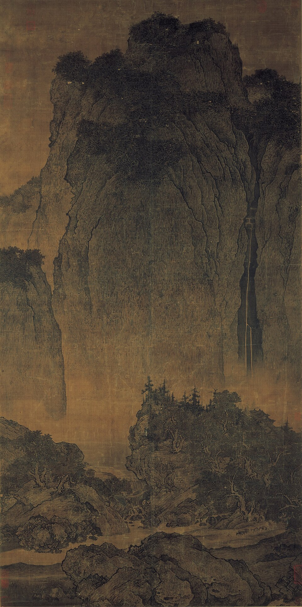
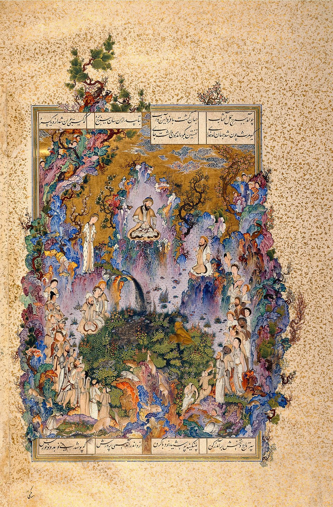
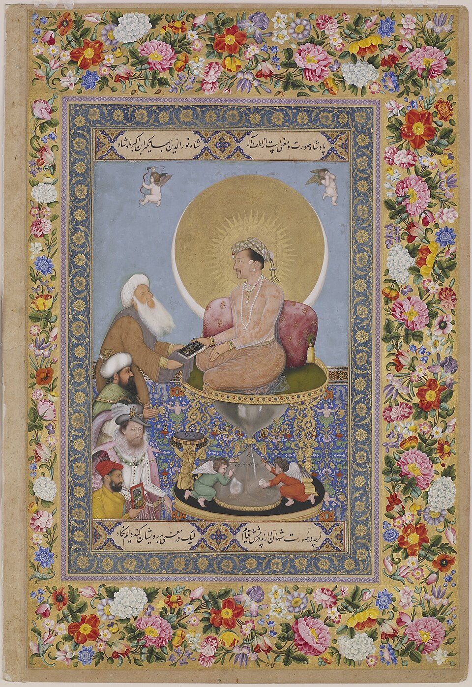
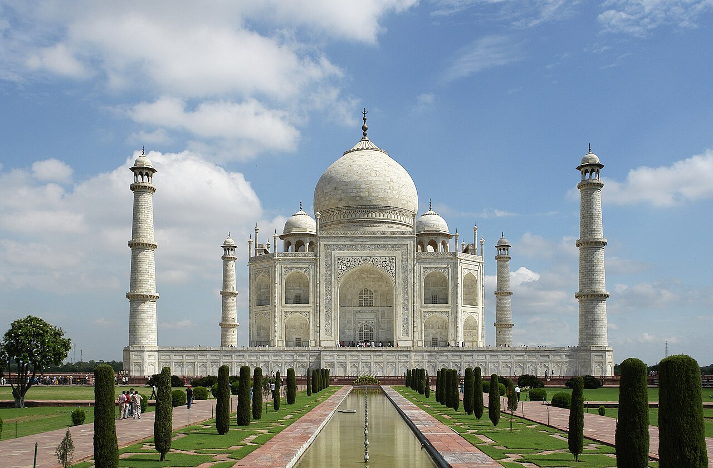

Travelers Among Mountains and Streams
Song ChinaChinaInk on silk hanging scroll
Landscape becomes a philosophical world rather than a window-like illusion.
More ↗c. 1000 → 1800, with later echoes
Major pictorial traditions that unfold beside, beyond, and sometimes in contact with the familiar European storyline




Guide timeline
Move across the whole guide in sequence: see the dates, where you are now, and the next chapter coming up.
Overview
A wider art history means more than adding side notes to Europe. These traditions have their own materials, institutions, ideals, and rhythms, and they deserve to be encountered on those terms.
Works
Landscape becomes a philosophical world rather than a window-like illusion.
More ↗A courtly, jewel-like visual logic very different from Renaissance Europe.
More ↗Court power, image politics, and refinement outside the European story.
More ↗Architecture belongs in art history too, and this is one of the clearest global anchors.
More ↗
Print culture and stylization that also later reshape European taste.
More ↗Next